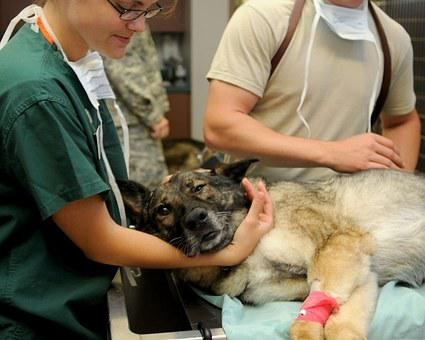

Animals have been a friend of man since old ages. Veterinary science and medication are important pieces of clinical science. Students who concentrate on veterinary medication in Germany learn how to manage the prevention, determination, and treatment of infection, disarrangement, and injuries of animals. At the point when you talk about the future scope of veterinary science, its scope is limitless. It covers major areas of fauna, all animals, and high range conditions, which might influence various species.
Veterinary science and medication are generally practiced by specialists who effectively concentrate on veterinary in Germany. They are practiced in a way without proficient supervision. The professionals’ consideration and administrations are for the most part given by the veterinary doctor. The Para veterinary specialists, for example, veterinary medical attendants or help these veterinarians. This can be expanded by different paraprofessionals with high specialism like animal physiotherapy or dentistry, and species-related jobs. Those who wanting to concentrate on veterinary in Germany should know that it isn’t simply restricted to animals. Veterinary experts help human health by keeping a tab and controlling the spread of zoonotic infection. These zoonotic diseases can be exceptionally infectious now and again they should be surveyed before they come into wide presence. The individuals who study veterinary medication in Germany learn how to hold in line the spread of dangerous infections that are sent from non-human animals to people and veterinary researchers regularly team up with disease transmission experts